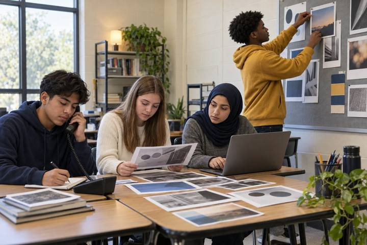
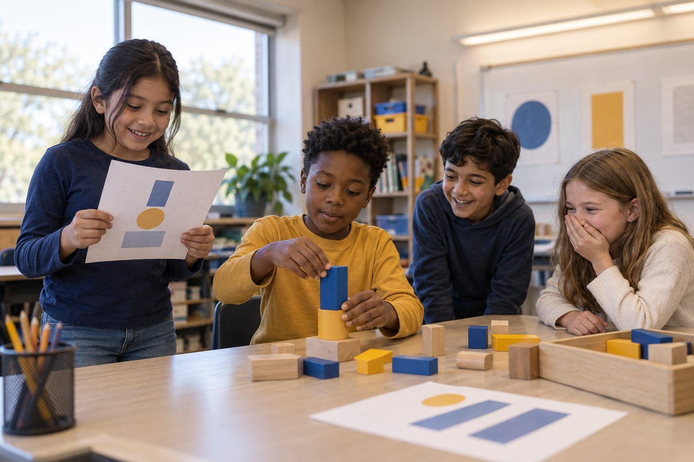

Student learningfor Grades 9–12
Algorithm Autopsy
Students dissect the design features of a fictional social app, trace how each one shapes attention and belief, and redesign the feed for people instead of engagement.

All activities Student learning
Students write instructions for a classmate "robot" who follows them exactly, discover why vague prompts get surprising results, and build a recipe for clear prompts they can use with AI and with people.
Computer scientists have an old saying: garbage in, garbage out. If the instructions are unclear, the result will be too. In this game, a Director secretly draws a picture from a shape challenge and writes instructions, and a classmate Robot follows those words exactly, with no peeking and no questions. Round 1 results are often wildly off. Round 2, after the class builds a "prompt recipe," gets much closer. Students then upgrade vague AI prompts and learn the other half of the truth: even a great prompt can get a wrong answer, so people still check.
Hook
Stand at the board and say: "I am a robot. I do exactly what you say, nothing more." Ask the class to tell you how to draw a cat. When a student says "Draw a cat," draw a tiny circle in the corner and stop. "Draw ears" gets two ears floating far away from the head. Keep following the words literally. After a minute, ask: "Why doesn't my cat look like the cat in your head?" Take answers, then write Garbage in, garbage out on the board.
Facilitator noteStay deadpan. The laughter is the hook, but the point is that the robot can't read minds; it only has the words.
Model
Explain simply: "A generative AI chatbot learned from huge amounts of writing. When you type a prompt, it predicts the words that are most likely to come next, one after another. It doesn't know what's in your head. When your prompt leaves something out, it fills the gap with a likely guess." Then read the Robot Rules aloud: the Robot does only what the words say; no peeking; no questions; the Director can't point or gesture. Show a Shape Challenge Card and model writing two precise instructions: "Draw a big square in the middle of the page, about as wide as your hand."
Facilitator noteStudents often ask whether AI "understands." A fair answer for this age: "It's very good at predicting what words usually come next. That can look like understanding, but it can also be confidently wrong."
Practice
Round 1 (5 min): Directors take a Shape Challenge Card, hide their paper behind a folder, draw their picture, and write instructions in the Round 1 box of Handout B. Robots read and draw in the Round 1 drawing box, following exactly. Reveal and compare. Quick huddle (2 min): Ask pairs what went wrong and build the first version of the Prompt Recipe on chart paper. Round 2 (5 min): Switch roles with a new card. Directors write using the recipe. Robots draw. Compare again.
Facilitator noteLook for Round 2 instructions that name size, position ("top left corner"), count, and order. Those are the details AI prompts need, too: specifics instead of assumptions.
Debrief
Put two pairs' Round 1 and Round 2 drawings under the document camera. Ask: "What changed between rounds? Which words made the biggest difference?" Finalize five ingredients on the chart: Who is it for? What exactly? How many or how long? Which details matter? What style or format? Then ask: "When your Robot still drew something wrong in Round 2, whose job was it to notice?" (The Director's, by checking the result.)
Facilitator noteConnect to S3.2: clear instructions are clear communication. The same recipe helps when you ask a classmate for help or explain your idea.
Apply
Pairs complete Handout C: for each vague prompt, name what's missing using the recipe, then write an upgraded prompt. Share a few aloud. If you have the projected demo, type one vague prompt and the class's upgraded version into the chatbot and compare the answers. Then point out any mistakes or made-up details in either answer and ask: "Did a better prompt make it automatically correct?"
Facilitator noteRow 5 on Handout C adds wrong information to the prompt ("garbage in"). Students should notice that a tool may repeat the mistake instead of fixing it.
Reflect
On the back of Handout B, students answer: "One thing I changed in Round 2 was ___. It helped because ___." and "Even with a clear prompt, I still need to ___." Collect as evidence.
Facilitator noteStrong answers name a specific revision ("I said where on the page") and a checking move ("check if the answer is right").
Everything runs on paper. The classmate Robot is the "AI," and the Prompt Upgrade Lab needs no device: pairs can swap upgraded prompts and act as each other's chatbot, writing a short answer and marking any detail they had to guess.
Project a district-approved generative AI chatbot from the teacher's device during the Apply step. Type a vague prompt from Handout C and the class's upgraded version, one after the other, and compare the answers against the Prompt Recipe. Ask students to point out anything the tool assumed or invented. Students under 13 do not use their own AI accounts; if your district provides a supervised, approved tool for older students, pairs can test their own upgraded prompts and log what changed.
Does it need a screen? The unplugged Robot game teaches the core idea (unclear input, unpredictable output) better than any screen. A short projected comparison adds proof: students see a real AI tool respond differently to vague and specific prompts, and still make mistakes, which paper can only describe.
What you should be able to see or collect if it worked.
At home, students play "Robot Chef" with a family member: write instructions for making a simple snack (a sandwich, a bowl of cereal) and have the family member follow them exactly, then revise together. In class, post the Prompt Recipe and use it when students write directions in math, science procedures, or requests to classmates.